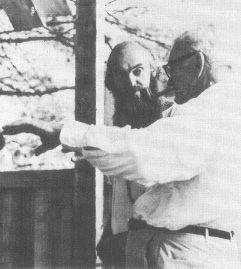

GETTING STRAIGHT

Your understanding of what the universe is all about changes as you proceed further along the path towards enlightenment. As your vantage point or perspective changes, you begin to understand more and more of “how it is.” With this greater understanding comes greater compassion . . . an acceptance of “how it is” . . . an ability to see the divine plan in everything . . . even in your failings and the failings of others.
In the course of your journey it is most likely that your day-to-day companions or friends may change. Some may fall away as your interest in the Spirit pulls you from the worldly interest which brought or kept you together, but new friends who share your current interests will appear. Of course, some of your existing relationships will move easily into this new domain and the relationship will become deeper and calmer . . . coming to exist in the eternal present.
This transition in travelling companions is a delicate and troubling matter. To find that someone whom you assumed shared all your values and interests over many years has no interest what-so-ever in enlightenment or in becoming more conscious or coming into the Spirit is a shock. You want to share this “trip” with him in the same way as you shared others in the past. That desire to proselytize, to turn him on, to show him, to bring him to the light . . . is a reflection of your lack of wisdom. For only some people can hear. Only some can awaken in this lifetime. It’s a little like seeing a friend drowning and being unable to catch his hand. You want so badly to DO something. But in truth you can only BE . . . be as straight and as open and as HERE as you can be . . . and if your friend can hear, he will hear. And if he cannot hear, he will turn away from you. No blame.
What is important is that you get your house in order at each stage of the journey so that you can proceed.
“If some day it be given to you to pass into the inner temple, you must leave no enemies behind.”—de Lubicz
For example, if you never got on well with one of your parents and you have left that parent behind on your journey in such a way that the thought of that parent arouses anger or frustration or self-pity or any emotion . . . you are still attached. You are still stuck. And you must get that relationship straight before you can finish your work. And what, specifically, does “getting it straight” mean? Well, it means re-perceiving that parent, or whoever it may be, with total compassion . . . seeing him as a being of the spirit, just like you, who happens to be your parent . . . and who happens to have this or that characteristic, and who happens to be at a certain stage of his evolutionary journey. You must see that all beings are just beings . . . and that all the wrappings of personality and role and body are the coverings. Your attachments are only to the coverings, and as long as you are attached to someone else’s covering you are stuck, and you keep them stuck, in that attachment. Only when you can see the essence, can see God, in each human being do you free yourself and those about you. It’s hard work when you have spent years building a fixed model of who someone else is to abandon it, but until that model is superceded by a compassionate model, you are still stuck.
In India they say that in order to proceed with one’s work one needs one’s parents’ blessings. Even if the parent has died, you must in your heart and mind, re-perceive that relationship until it becomes, like every one of your current relationships, one of light. If the person is still alive you may, when you have proceeded far enough, revisit and bring the relationship into the present. For, if you can keep the visit totally in the present, you will be free and finished. The parent may or may not be . . . but that is his karmic predicament. And if you have been truly in the present, and if you find a place in which you can share even a brief eternal moment . . . this is all it takes to get the blessing of your parent! It obviously doesn’t demand that the parent say, “I bless you.” Rather it means that he hears you as a fellow being, and honors the divine spark within you. And even a moment in the Here and Now . . . a single second shared in the eternal present . . . in love . . . is all that is required to free you both, if you are ready to be freed. From then on, it’s your own individual karma that determines how long you can maintain that high moment.
This getting straight not only applies to people but to things as well, such as favorite music, disliked foods, special treats, avoided places, all your toys, etc. Everything must be rerun through your compassion machine. You must revisit, at least in meditation, all your old attachments and re-see them in the light of the Spirit. As you do, they fall away . . . unless, of course, the attachment to them is so strong that you are not able yet to re-see them with pure compassion. To stumble in that way on the path merely indicates the work yet to be done. Thus it gives direction to your sadhana . . . which is work on those desires that cause you to stumble, by bringing them into the light of mantra or the witness until they fall away of their own.